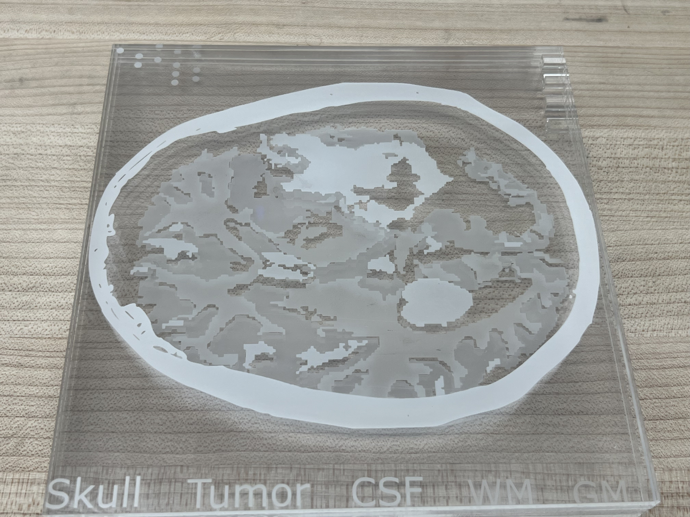
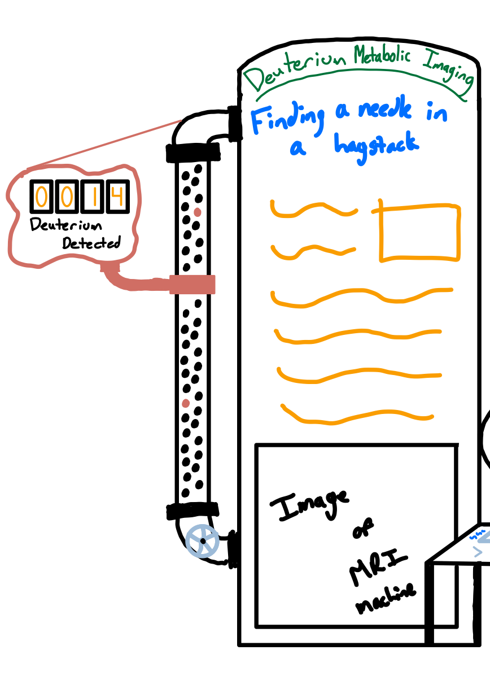

Tactile Tomography
Reframing the "needle in a haystack" challenge of metabolic imaging through a hands-on, mechanical museum exhibit.
For PWR91NSC: Introduction to Science Communication we had to work on a project in a medium designed to appeal to the general public. I created an interactive exhibit suitable for a science museum that explained the challenge of Deuterium Metabolic Imaging, a topic I had spent the summer researching. My exhibit allowed people to assemble differently shaped brains by stacking together clear acrylic plates and then scanning them onto a computer and then participate in the reconstruction process to see how the data collected from MRI scans change through reconstruction. The images of the brain were from real MRI brain scans that I took as a part of my research.

This was a very fun, but challenging, translation of data that I had seen nearly everyday for months. When creating an exhibit for a science museum it needs to be accessible and inspire the audience to be creative and experiment on their own. This “inquiry-based” approach was central to my exhibit, with interaction prioritized at every step. Most of the science communication materials I create are either static or experienced through interaction with me, but a museum exhibit has to stand on its own which presented a unique problem.

Instead of using real data, for this project I was tasked with designing representations of the data which had both high pedagogical value and encouraged interaction. I represented the hydrogen and deuterium atoms with small balls, so that the “needle in the haystack” problem with Deuterium Metabolic Imaging could be seen explicitly. I added an interactive element that allows for the audience to take part in the search for deuterium “atoms” using a hand crank and a sensor. By allowing the viewer to appreciate the scale of the problem and letting them feel the slow, frustrating process of “scanning” deuterium atoms I hoped to better contextualize why this is a hard problem to solve.
Though I wasn’t able to build my whole exhibit, I created the laser engraved brain slices for the build-a-brain part of the exhibit. Actually, creating the acrylic pieces and getting to physically experience them for myself was very educational. It’s easy to have an idea of how something could work but bringing it into the real world always provides a new perspective on things. For example, I had added notches to the acrylic pieces so that they could fit together without sliding around. However, since I only added the notches to one side the pieces could still slide around which made them more challenging to work with and would pose an issue for those with low motor coordination (such as children).
Working in a non-digital medium allowed me to see a different side of science communication. Though much of the communication done and experienced by academics is digital, physical examples can go a long way in facilitating understanding and bringing our findings to new audiences.